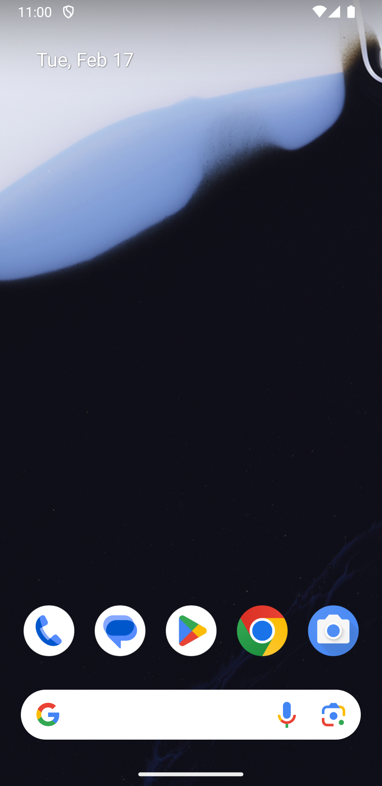
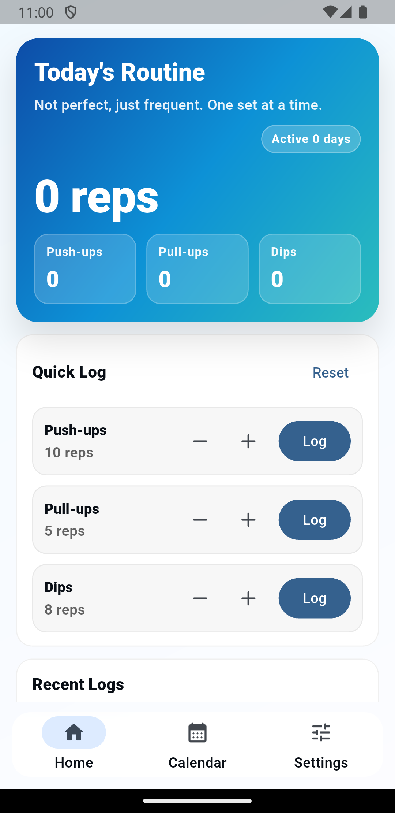

문제: 운동 앱의 첫 경험이 너무 무겁다
GTG는 실패 직전까지 몰아붙이는 운동이 아니라, 하루 중 짧은 세트를 반복해 습관을 만드는 방식입니다. 따라서 첫 화면은 설명보다 “지금 1세트 기록”을 빠르게 유도해야 했습니다.
Flutter · Local-first · Product Engineering Portfolio
PROJECT GTG는 푸쉬업·풀업·딥스를 짧고 자주 수행하는 GTG 방식에 맞춘 모바일 앱입니다. 이 포트폴리오는 4년차 개발자 관점에서 제품 문제 정의, UI/UX 선택 이유, Flutter 아키텍처, 테스트와 릴리즈 운영까지 한 번에 설명하는 case study입니다.
Case Study
면접관이 보기 좋은 포트폴리오는 화면 나열보다 “왜 이렇게 만들었는지”가 보여야 합니다. 그래서 GTG를 실제 제품처럼 문제 정의와 트레이드오프 중심으로 정리했습니다.
GTG는 실패 직전까지 몰아붙이는 운동이 아니라, 하루 중 짧은 세트를 반복해 습관을 만드는 방식입니다. 따라서 첫 화면은 설명보다 “지금 1세트 기록”을 빠르게 유도해야 했습니다.
초기 버전은 계정·동기화보다 빠른 실행과 안정성이 더 중요하다고 판단했습니다. 로컬 저장을 기본으로 두고, PocketBase 연동은 구성값이 있을 때만 작동하는 확장 지점으로 분리했습니다.
Riverpod provider, repository interface, feature screen을 분리해 대시보드·캘린더·코치·설정 기능이 서로 직접 의존하지 않도록 설계했습니다.
위젯/유닛/레이아웃 테스트와 Android 스모크 체크를 QA 매트릭스로 관리했습니다. 최근 변경 기준 전체 테스트는 115개 통과, 2개 스킵 상태입니다.
Interview Hooks
각 항목은 “왜?”라는 후속 질문으로 이어지도록 설계했습니다.
첫 실행 온보딩을 과감히 제거했습니다. 운동 앱의 핵심 행동은 설명 읽기가 아니라 기록 시작이므로, 홈 진입을 우선해 이탈 가능성을 낮추는 방향을 택했습니다.
서버가 있으면 멋져 보이지만 현재 가치에는 필수적이지 않았습니다. 비용과 운영 리스크를 줄이고, 앱은 오프라인에서 완결되도록 유지했습니다.
GTG Coach는 로컬 룰 엔진으로 기본 추천을 제공하고, 추후 서버 추천이 가능하도록 같은 모델 형태로 확장했습니다.
Screens
홈은 빠른 기록, 캘린더는 회고, 설정은 관리 기능으로 역할을 분리했습니다.
 Calendar · 히트맵
Calendar · 히트맵 Reminders · 습관 알림
Reminders · 습관 알림
Logs · 기록 검토
Settings · 관리UI/UX Rationale
GTG 사용자는 오래 탐색하지 않습니다. 앱을 여는 순간 바로 기록하거나, 오늘의 리듬을 확인해야 합니다.
홈 화면의 우선순위는 “오늘 몇 세트를 했는가”와 “지금 바로 추가할 수 있는가”입니다. 그래서 상세 설정은 뒤로 빼고, 기록 CTA와 요약 정보를 전면에 배치했습니다.
너무 밝은 화면은 운동 중 확인하는 앱과 맞지 않는다고 판단했습니다. 어두운 배경, 높은 대비의 포인트 컬러, 카드형 섹션으로 피로도를 낮추고 집중감을 만들었습니다.
설정에 모든 기능을 몰아넣으면 관리 화면이 복잡해집니다. GTG Coach, 리마인더, 전체 기록 같은 목적별 하위 화면으로 나눠 탐색 부담을 낮췄습니다.
별도 온보딩 대신 화면 안의 문구와 코치 카드로 안내합니다. 사용자는 설명을 통과해야 하는 것이 아니라, 사용하면서 의미를 이해하게 됩니다.
Technical Design
Flutter 앱이지만 포트폴리오 관점에서는 “상태, 저장소, 확장성, 테스트 가능성”이 핵심입니다.
DashboardScreen, CalendarScreen, GtgCoachScreen, SettingsScreen.
기능별 화면을 분리하고 공통 UI 토큰은 GtgUi, GtgTheme로 재사용합니다.
flutter_riverpod 기반 controller/provider 구성. 화면은 provider를 구독하고,
저장·계산·알림 로직은 feature state 계층에 둡니다.
WorkoutLogRepository, UserPreferencesRepository 등 repository interface로 저장소를 감쌉니다.
현재는 로컬 퍼스트이며, PocketBase는 설정된 경우에만 동기화됩니다.
version.json으로 업데이트 안내를 제공하고, CI/릴리즈 스크립트로 분석·테스트·빌드 기준을 관리합니다.
go_router의 StatefulShellRoute로 홈/캘린더/설정 탭 상태를 유지합니다.
로컬 저장소 실패 시 기본값 fallback, 손상 JSON 격리, 임시 파일 정리까지 테스트합니다.
ARB 기반 한국어/영어 지원으로 스토어 배포와 해외 사용자 확장을 고려했습니다.
Quality & Release
사이드 프로젝트라도 “돌아갑니다”가 아니라 “어떻게 검증했는가”를 보여주는 것이 중요합니다.
최근 변경 후 아래 검증을 통과했습니다.
flutter analyze — No issues foundflutter test --dart-define=UI_TESTING=true — 115 passed, 2 skipped홈 빠른 기록, 캘린더 히트맵, 리마인더 권한, 설정 라우팅, 저장소 손상 복구, Android 레이아웃 대응을 테스트 파일과 연결해 관리합니다.
Code Evidence
면접에서 바로 열어볼 수 있도록 핵심 파일을 연결했습니다.
Closing
“사용자가 이탈하는 지점”을 제품 관점에서 정의하고, 그 결정을 코드 구조와 테스트로 끝까지 연결할 수 있는 개발자입니다. 단순히 Flutter 화면을 만든 것이 아니라, 로컬 퍼스트 전략, 기능 우선순위, 확장 가능한 데이터 경계, 출시 검증까지 실제 앱 운영 흐름으로 설계했습니다.